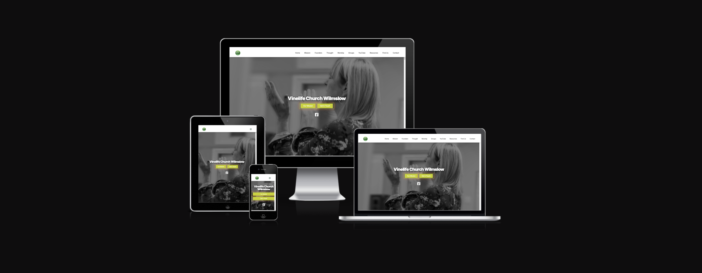

Vinelife Church Wilmslow
Website redesign for a local church focused on improving structure, navigation and mobile usability.
- Role: Web Design & Development
- Year: 2026
- Technologies: HTML, Tailwind CSS, JavaScript, Google Calendar API

Project Overview
Vinelife Church Wilmslow is a welcoming evangelical church based in Wilmslow, Cheshire. The aim of the redesign was to create a modern website that clearly communicates the church’s activities and makes it easier for visitors to find important information such as service times and events.
- Added a responsive navigation bar for easy access to all sections
- Integrated Google Calendar for automatic event updates
- Implemented “Thought for the Day” with dynamic scripture content
- Enhanced mobile usability and accessibility
The Problem
- Difficult navigation

- No clear structure
- Important information hard to find
- Links not working correctly
- Not optimised for mobile devices
The Solution
- Creating a clear navigation structure
- Dividing the site into logical sections
- Improving readability and layout
- Making the website responsive for mobile devices
- Integrating a calendar system to display upcoming meetings
Key Features
- Responsive Design: The site adapts smoothly across desktop, tablet and mobile screens.
- Events Calendar Integration: Using the Google Calendar API, monthly worship meetings update automatically.
- Clear Navigation: A simple navigation system allows visitors to quickly access important sections.
- Thought for the Day: Dynamic scripture content displayed using a Bible verse API.
Screenshots / Visuals
-

Click to enlarge
Technologies Used
- HTML
- Tailwind CSS
- JavaScript
- Google Calendar API
- Responsive design techniques
Outcome
The redesigned website provides a clear and welcoming digital presence for the church. Visitors can easily find service times, upcoming events and information about the church community.